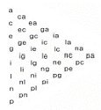

컬러리스트기사 (2008-03-02 기출문제)
1과목: 색채심리 마케팅
1. 마케팅 믹스에 대한 설명 중 잘못된 것은?
- 기업이 표적시장을 통하여 원하는 결과를 얻을 수 있도록 하기 위하여 사용하는 통제 가능한 마케팅 변수의 총집합이다.
- 제품에 대한 수요에 영향을 주기 위하여 한 기업이 시장에서 자극요소로 활용할 수 있는 모든 수단을 활용하는 것이다.
- 제품의 생산과정과 홍보와 촉진이 최종목표이다.
- 4P와 관련하여 소비자와 기업을 감성과 경험으로 연결짓기도 한다.
(정답률: 알수없음)

2. 다음의 색채조사 방법 중 설문지 작성에 관한 문항으로 잘못된 것은?
- 설문지 문항 중 개방형 문항을 응답자가 자신의 생각을 자유롭게 응답하는 것이다.
- 설문지 문항 중 폐쇄형은 두 개 이상의 응답 가운데 하나를 선택하도록 하는 것이다.
- 각각의 질문은 하나의 내용만 구체화해야 하며 응답자의 상당한 지식이나 특정 견해, 행동을 가정한 질문은 피해야 한다.
- 질문의 순서에는 미세한 차이가 나는 반복성 질문을 피하고 관련된 질문을 연결되지 않게 무작위로 배치하여야 한다.
(정답률: 알수없음)
3. 지역색에 대한 설명으로 잘못된 것은?
- 일본의 지역색을 회색과 진한 브라운색이다.
- 랑크로(Jean-Philippe Lenclos)는 프랑스 땅의 색을 기반으로 건축물을 위한 색채 팔레트를 작성하였다.
- 건축물에 사용되는 색채는 지리적, 기후적 환경과 관련되어야 한다.
- 한 지역의 정체성을 대변하는 진정한 색채로 국가 상징색과 일치한다.
(정답률: 알수없음)
4. 다음 SD법에 관한 설명 중 잘못된 것은?
- 이미지의 심층면접법과 언어 연상법이다.
- 이미지의 수량적 척도화의 방법이다.
- 형용사 반대어 쌍으로 척도를 만들어 피험자에게 평가하게 한다.
- 복잡하고 파악하기 어려운 현상을 다차원적으로 표시할 수 있어 색채는 물로 여러 이미지 조사방법으로 널리 쓰이고 있다.
(정답률: 알수없음)
5. 직감적 전략에 대한 설명으로 잘못된 것은?
- 즉각적인 대응능력의 표현이다.
- 유능한 경영자에 의존하는 전략이다.
- 가장 합리적이고 체계적이다.
- 단기적이고 즉흥적인 해결에 효과적이다.
(정답률: 알수없음)
6. 다음 대상별 색채선호에 관한 설명 중 사실과 가장 거리가 먼 것은?
- 색에 대한 일반적인 선호 경향과 특정 제품에 대한 선호색은 같다.
- 자동차의 경우 대형차와 소형차에 따라서 다른 색채 선호 경향을 보인다.
- 동일한 제품이라도 여성과 남성의 선호 경향에 따라 다른 색채가 적용될 수 있다.
- 제품의 특성에 따라서 선호되는 색채는 거정된 것이 아니다.
(정답률: 알수없음)
7. 일반적으로 ‘사과는 무슨 색?’ 하고 묻는 질문에 ‘빨간색’이라고 답하는 경우처럼, 물체의 표면색에 대해 무의식적으로 결정해서 말하게 되는 색을 무엇이라 하는가?
- 항상색
- 무의식색
- 기억색
- 추측색
(정답률: 알수없음)
8. 다음 각 디자인의 특성에 따른 색채에 관한 설명 중 잘못된 것은?
- 패션 디자인에서 유행색은 사회, 경제, 문화적 요인을 고려한 유행 예측색과 일정기간 동안 많은 사람들이 선호하는 색으로 나눌 수 있다.
- 포장 디자인에서의 색채는 제품의 이미지 및 전체 분위기를 나타내는 중요한 역할을 한다.
- 제품 디자인은 다양한 소재의 집합체이며 그 다양한 소재는 같은 색채로 적용되는 것이 가장 효과적이다.
- 광고 디자인은 상품의 특성을 분명히 해주고 구매충동을 유발하는 색채의 적용이 필요하다.
(정답률: 알수없음)
9. 작업현장 및 오피스의 색채계획에서 가장 바람직한 것은?
- 작업 테이블의 가장 자리에 채도와 명도가 높은 빨간색을 사용하여 집중도를 높인다.
- 사무실의 논리적 작업성 향상을 위해 내부에 차가운 금속과 유리를 주로 사용한 하이테크 이미지 디자인을 적용한다.
- 사무실은 가능한 한 시각적 자극을 없애는 것이 능률을 향상시킨다.
- 명도와 채도의 변화 등을 사용하여 적절한 감각적 자극을 부여한다.
(정답률: 알수없음)
10. 작업장에 있는 장비의 밑부분이 더 어둡게 칠해져 있을 때 더 안정되고 견고해 보이는 것은 무엇 때문인가?
- 무게와 크기의 지각
- 부피의 지각
- 온도와 지각
- 소음의 지각
(정답률: 알수없음)
11. 다음중 색채기호조사에 대한 설명으로 잘못된 것은?
- 선호, 비선호 내용을 조사하여 성별, 연령별, 지역별 기호유형을 알아내는 것이다.
- 색채기호분석에서는 응답자들의 특성을 비교하여 기호유형별로 집단을 만들어주는 빈도분포분석법을 주로 활용한다.
- 기호 이미지 라이프 스타일 조사 분석으로 응용범위를 확대할 수 있다.
- 소비자의 색채감성을 보다 정확히 파악하여 상품디자인을 위한 효과적인 정보를 얻을 수 있다.
(정답률: 알수없음)
12. 조사 방법에 대한 내용 중 잘못된 것은?
- 개별 면접조사는 심층적인 정보를 수집하는데 용이하다.
- 전화조사는 즉각적인 응답반응을 알 수 있어 많이 선호한다.
- 우편조사는 최소한의 인원으로 높은 응답률을 기대할 수 있다.
- 조사방법 중 표본의 대표성을 최대한 유지할 수 있는 것은 개별 면접조사이다.
(정답률: 알수없음)
13. 광고전략중 연속성 있는 전략을 기획하는 방법으로 옳지 않은 것은?
- 복잡한 맛이 있어야 한다.
- 주제가 뚜렷해야 한다.
- 공통점을 잘 표현해야 한다.
- 즐거움을 주는 광고라야 한다.
(정답률: 알수없음)
14. 다음의 설명 중 틀린 것은?
- 관여(Involvement)도가 높아지면 대상 정보처리과정이 정교하고 의사결정 과정이 합리적이 된다.
- 관여도가 낮아지면 브랜드에 관한 지식은 의도학습이나 인지학습과 같은 기제에 의해 형성된다.
- 고 관여일 때는 반대 주장에 대한 수용력에 감소하여 설득메세지에 저항하는 인지반응이 많다.
- 저 관여일 때는 반박주장(Counterargument)이 줄고 비합리적인 방식으로 정보처리가 일어난다.
(정답률: 알수없음)
15. 설문조사를 실시한 후 각 변수들 간의 관련성을 분석하고, 각 변수들이 어느 정도 밀접한 관련성이 있는가를 알 수 있는 통계분석 방법은?
- 상관관계분석
- 교차 분석
- 빈도 분석
- 산술평균
(정답률: 알수없음)
16. 마케팅 믹스에 포함되지 않는 것은?
- Product
- Price
- Principle
- Promotion
(정답률: 알수없음)
17. 환경색채의 영향으로 옳지 않은 것은?
- 지역 거주자의 생활에 영향을 준다.
- 의식적ㆍ무의식적 행동을 유발한다.
- 자연환경인 기후와 일광에 영향을 준다.
- 지역의 자연적이고 인공적인 특징을 형성한다.
(정답률: 알수없음)
18. 다음 중 피로를 덜기 위한 배색으로 옳은 것은?
- 주변에 짙은 색과 공통성이 적은 배색
- 주변에 옅은 색이나 공통성이 적은 배색
- 주변에 짙은 색과 공통성이 많은 배색
- 주변에 옅은 색이나 공통성이 많은 배색
(정답률: 알수없음)
19. 마케팅에 관한 설명 중 올바른 정의는?
- 마케팅이란 자기 회사 제품의 실태를 파악하는 것을 말한다.
- 산업 제품이 생산자로부터 소비자까지 전달되는 모든 과정과 관련된다.
- 시대에 따른 유행이나 스타일과는 관계가 없다.
- 산업제품을 대량생산 하는 것을 마케팅이라고 한다.
(정답률: 알수없음)
20. 다음 기업색채에 대한 설명으로 틀린 것은?
- 사람에게 불쾌감을 주지 않고 조화로운 색채
- 기업의 독특한 이미지를 살리기 위한 고명도, 고채도의 색채
- 여러 가지 소재로 응용할 수 있으며 관리하기 쉬운 색채
- 눈에 띄기 쉽고 타사(다른 회사)와의 차별성이 뛰어난 색채
(정답률: 알수없음)
2과목: 색채디자인
21. 생태학적으로 건강하고 유기적 전체로 통합시킬 수 있는 환경디자인 요건 중 가장 근접한 것은?
- 합리성
- 질서성
- 친자연성
- 문화성
(정답률: 알수없음)
22. 시장 세분화(market segmentation)의 방법이 아닌 것은?
- 연령, 성별, 수입, 직업별로 나누는 인구학적 세분화
- 지역, 도시 크기, 인구밀도 등으로 나누는 지리적 세분화
- 문화, 종교, 사회 계층 등으로 나누는 사회 문화적 세분화
- 제품의 색상이나 외관 등에 의한 이미지 세분화
(정답률: 알수없음)
23. 메이크 업을 하기 위한 가장 중요한 3대 관찰 요소는?
- 이목구비의 비율, 얼굴형, 얼굴의 입체 정도
- 시대유행, 의상과의 연관성, 헤어 스타일과의 조화
- 비용, 고객의 미적 요구, 보건 및 위생
- 색의 균형, 피부의 질감, 얼굴의 형태
(정답률: 알수없음)
24. 디자인이란 용어는 라틴어 designare에서 유래하였다. 디자인의 핵심적인 의미를 가리키는 이 라틴어의 뜻은?
- 계획하다.
- 색칠하다.
- 추구하다.
- 완성하다.
(정답률: 알수없음)
25. 각 디자인 사조와 그에 대한 설명이 옳은 것은?
- 플럭서스(Fluxus)란 원래 낡은 가구를 주워 모아 새로운 사수를 만든다는 뜻으로 저속한 모방예술을 의미한다.
- 바우하우스(Bauhaus)는 신조형주의 운동으로서 개성을 배제하는 주지주의적 추상미술운동이다.
- 다다이즘(Dadaism)의 화가들은 자연적 형태는 기하학적인 동일체의 방향으로 단순화시키거나 세련되게 할 수도 있다고 하였다.
- 비대칭 추상미술의 대표자인 바실리 칸딘스키는 강한 원색대비와 후기에는 단순한 명도대비에 의한 작품을 남겼다.
(정답률: 알수없음)
26. 기능적 디자인에서 탈피, 모조 대리석과 같은 채색 라미네이트를 사용, 장식적이며 풍요롭고 진보적인 디자인을 추구한 것은?
- 반디자인
- 극소주의
- 국제주의 양식
- 멤피스 디자인 그룹
(정답률: 알수없음)
27. 다음 중 옥외광고에 속하지 않는 것은?
- 패키지(package)
- 네온사인(neon sign)
- 애드벌룬(adballoon)
- 광고자동차(advertising car)
(정답률: 알수없음)
28. 70년대 히피들에 의해 반모드로 유행되었던 의상으로 층이 지게 착용하거나 여러 겹을 겹쳐 입는 스타일은?
- 뉴룩
- 드레스
- 레이어드 룩
- 가르손느 스타일
(정답률: 알수없음)
29. 컬러 플래닝 최종단계에서 이루어지는 입체모형 혹은 컴퓨터 그래픽에 의해 최종상황을 검증하는 것은?
- 컬러 오버레이
- 컬러 스케치
- 컬러 시뮬레이션
- 컬러 스킴
(정답률: 알수없음)
30. 환경 친화적 디자인의 접근 방법에 해당 되지 않는 디자인의 원리는?
- 재활용을 위한 디자인
- 재사용을 위한 디자인
- 분해를 위한 디자인
- 폐기를 위한 디자인
(정답률: 알수없음)
31. 다음 디자인 사조와 관련된 작가 또는 작품과의 연결이 바르지 못한 것은?
- 아르누보 - 빅토르 오르타(Victor Horta)
- 데 스틸 - 적청(Red and Blue)의자
- 큐비즘 - 파블로 피카소(Pablo Picasso)
- 아르데코 - 구겐하임(Guggenheim)박물관
(정답률: 알수없음)
32. 시각디자인 기능의 연관성이 바르게 짝지어진 것은?
- 지시적 기능 : 신호, 활자, 문자, 지도
- 설득적 기능 : 심벌마크, 패턴, 일러스트레이션
- 기록적 기능 : 신문광고, 잡지광고, 포스터
- 상징적 기능 : 사진, 영화, 인터넷
(정답률: 알수없음)
33. 디자인에 관한 설명 중 적절하지 않은 것은?
- 디자인을 하기 위해서는 합목적성과 심미성, 경제성과 독창성을 충족시켜야 한다.
- 디자인을 하기 위해서는 생태학, 철학, 심리학, 생물학 등 폭넓은 분야에 대한 이해가 요구된다.
- 현대 디자인은 빠르게 변하는 정보사회의 요구에 부응하기 위해 관습적, 토속적 디자인 요소를 배제해야 한다.
- 현대 디자인은 점차로 자연과의 ‘공생’과 ‘상생’이라는 측면에서 검토되어야 할 필요가 있다.
(정답률: 알수없음)
34. 제품의 색채계획 및 프로세스에 관한 설명으로 가장 거리가 먼 것은?
- 시장의 경향이나 소비자의 선호를 고려하여 배색하는 것이 좋다.
- 전체 이미지의 방향을 설정하고 주조색을 결정하는 것이 좋다.
- 디자이너의 개인적 감성에 맞추어 배색하는 것이 좋다.
- 광고, 포장, 배장의 디스플레이까지 색채가 연계되는 것이 좋다.
(정답률: 알수없음)
35. 일정계절이나 기간동안 많은 사람이 선호하여 착용하는 색으로 일정한 기간을 두고 주기적으로 반복되는 특성을 지닌 것은?
- 패션색
- 선호색
- 유행색
- 주조색
(정답률: 알수없음)
36. 디자인 과정에서 문제해결 과정의 순서가 올바른 것은?
- 평가 → 계획 → 조사 → 분석 → 종합
- 분석 → 조사 → 계획 → 종합 → 평가
- 계획 → 조사 → 분석 → 종합 → 평가
- 조사 → 계획 → 분석 → 종합 → 평가
(정답률: 알수없음)
37. 색채계획에 있어 디자이너가 갖추어야 하는 가장 중요한 요소는?
- 색채처리에 대한 감성적 사고
- 기능적 색채처리를 위한 과학적 사고
- 개성적인 색채훈련
- 일관된 색을 재현해낼 수 있는 배색훈련
(정답률: 알수없음)
38. 디자인의 조건 중 독창성에 대한 설명으로 틀린 것은?
- 디자이너의 창의적인 감각에 의하여 새롭게 탄생한다.
- 부분적으로 이미 있는 디자인을 수정 보완하여 사용할 수 있다.
- 대중성이나 기능보다는 차별화에 중점을 두어야 한다.
- 시대양식에서 새로운 정신을 찾아 창의력을 발휘한다.
(정답률: 알수없음)
39. 일반적으로 어떤 대상을 보고 느끼는 감각적 자극의 순서가 큰 것부터 작은 것의 순으로 바르게 나열된 것은?
- 질감→형태→색채
- 형태→색채→질감
- 색채→질감→형태
- 색채→형태→질감
(정답률: 알수없음)
40. 디자인의 요소가 아닌 것은?
- 형태
- 색
- 질감
- 재료
(정답률: 알수없음)
3과목: 색채관리
41. 광원의 분광복사강도분포에 대한 설명 중 맞는 것은?
- 백열전구는 단파장보다 장파장의 복사분포가 매우 적다.
- 백열전구 아래에서의 난색계열은 보다 생생히 보인다.
- 형광등 아래에서의 난색계열은 보다 생생히 보인다.
- 형광등 아래에서의 한색계열은 색채가 죽어 보인다.
(정답률: 알수없음)
42. 화상에 비쳐진 상태를 판단하므로 비교적 고광택도의 표면 검사에 이용되는 평가방법은?
- 대비 광택도
- 선명도 광택도
- 변각광도분포
- 경면 광택도
(정답률: 알수없음)
43. 디지털 방식에 대한 설명으로 맞는 것은?
- 전류, 전압 등과 같이 연속적으로 변화하는 물리량을 이용하여 값을 측정한다.
- 숫자와 숫자 또는 값과 값이 서로 연속되는 값으로 표현되는 숫자와 정보를 나타낸다.
- 연속으로 변화하는 일련의 사인(sine) 곡선으로 표현되는 경우가 많다.
- 데이터를 0과 1의 두 가지 상태로만 생성, 저장, 처리, 출력, 전송한다.
(정답률: 알수없음)
44. CCM(Computer Color Matching)의 활용 시 장점은?
- 시염 횟수가 감소하며, 염색 과정을 수치로 관리하여 보정 계산의 정도를 향상시킴으로써 시험을 생략하고 현장 처방이 가능하다.
- 조명 광원의 변화에 따른 물체릐 분광반사율 변화를 측정할 수 있다.
- CRM(Certified Reference Material)의 훼손을 방지하고 절대반사율 표준을 보다 오래 유지할 수 있다.
- 관측자의 시각에 근접한 자극광선에 의해서 색을 감지 할 수 있기 때문에 오차를 배제할 수 있다.
(정답률: 알수없음)
45. 다음 중 천연염료로만 구성된 것은?
- 동물염료, 광물염료, 식물염료
- 광물염료, 합성염료, 식용염료
- 식물염료, 형광염료, 식용염료
- 홍화염료, 치자염료, 반응성염료
(정답률: 알수없음)
46. 먼셀의 색채개념인 색상, 명도, 채도를 중심으로 선택하도록 되어있는 디지털 색채 시스템은?
- CMYK 시스템
- HSB 시스템
- RGB 시스템
- LAB 시스템
(정답률: 알수없음)
47. 객관적인 색채 계측시 측정값에 영향을 미치는 요소와 가장 거리가 먼 것은?
- 광원의 상대분광분포(Relative Spectral Intensity Distribution)
- 관측시야의 임계교조수(Critical Fusion Frequency)
- 시료의 분광확산반사율(Spectral Diffuse Reflectance)
- 관측자의 색채시감효율(Color Matching Functions)
(정답률: 알수없음)
48. 백색표준판(white reference plate)에 대하여 바르게 설명한 것은?
- 백색표준판은 측색기의 측정값을 보증하기 위한 측정기준 인증물질(CRM : Certified Reference Material)로 정기적으로 교정을 받아야 한다.
- 백색표준판은 측색기 구입시 제조사에서 제공하는 것으로 다른 것과 교체하거나 병행하여 사용 할 수 없다.
- 백색표준판은 측정의 기준이 되는 물질이므로 다소 손상이 되거나 오염이 되어도 함부로 교체해서는 안된다.
- 백색표준판의 성적은 장비 제조업체에서 책임을 지는 것으로 측색기의 성능과 더불어 측정값의 소급성도 장비제조업체에 있다.
(정답률: 알수없음)
49. 염료(Dye)에 대한 설명으로 바른 것은?
- 인디고는 가장 최근의 염료 중 하나이다. 인디고를 인공합성하게 되면서 청바지의 색을 내는 데에 이용하게 되었다.
- 염료를 이용하여 염색하는 구체적인 방법은 피염제의 종류, 흡착력 등에 의해 정해지는 것은 아니다.
- 직물섬유의 염색법과 종이, 피혁, 털, 금속 표면에 대한 염색법은 동일하다.
- 효율적인 염색을 위해서는 염료가 잘 용해되어야 하고, 분말의 염료에 먼지가 없어야 한다.
(정답률: 알수없음)
50. 색채 오차의 시각적인 영향에 따른 요인 중 맞는 것은?
- 태양 빛, 형광등 빛 등의 각 종류별 조명 방식에 따른 빛의 차이가 있다.
- 크기에 따른 색의 차이는 별로 없다.
- 대상이 보이는 각도와 조명되는 각도에 따라 색이 다르게 보이는 것은 아니다.
- 관찰자의 색채 지각은 나이나 감수성에 따라 달라지는 것은 아니다.
(정답률: 알수없음)
51. 광원 빛의 10~40%가 대상 물체에 직접 조사되고 나머지는 벽이나 천장에 반사되어 조사되는 방식으로, 그늘짐이 부드러우며 눈부심도 적은 조명방식에 해당하는 것은?
- 전반확산조명
- 직접조명
- 반간접조명
- 반직접조명
(정답률: 알수없음)
52. 다음 중 연색지수에 대한 내용으로 틀린 것은?
- 연색지수는 인공광원이 얼마나 기준광과 비슷하게 물체의 색을 보여주는가를 나타낸다.
- 각 광원의 연색지수 Ra는 정해진 8가지의 샘플색에 대해 시험광원 아래에서 본 경우와 기준광원 아래에서 본 경우의 색의 차이로 측정된다.
- 시험광원의 색온도가 5000K 이하일 때는 시험광원의 색온도와 가장 가까운 표준 주광을 택하고 5000K 이상일 때는 시험광원의 온도와 가장 가까운 흑체본사를 택한다.
- 연색지수를 산출하는데 기준이 되는 광원은 시험광원에 따라 다르다.
(정답률: 알수없음)
53. 경면 광택도는 측정하는 대상에 따라 구분해서 사용한다. 다음 설명 중 틀린 것은?
- 85도 경면 광택도 : 동이, 섬유 등 광택이 거의 없는 대상에 적용
- 75도 경면 광택도 : 85도 경면 광택도 측정과 동일함
- 60도 경면 광택도 : 광택범위가 넓은 범위를 측정하는 경우에 적용
- 45도 경면 광택도 : 비교적 광택도가 높은 도장면이나 금속면 끼리의 비교 등에 적용
(정답률: 알수없음)
54. 다음 중 색료의 호환성과 통용성을 확보하기 위한 국제적인 색료 표시 기준은?
- Whiteness Index
- CIE Color Index
- Yellowness Index
- Color Strength
(정답률: 알수없음)
55. 육안 조색 후 색채를 관측하는 방법에 대한 설명으로 옳지 않은 것은?
- 관측시 조명환경과 빛의 방향, 조명의 세기 등에 대해 사전 검토를 해야 한다.
- 조명의 방향과 관측방향을 두 시편에 동일하게 맞추어야 한다.
- 주변의 색채는 Gray 5~8 정도의 회색을 사용하여 비교한다.
- 관측자는 관측 전에 밝은 곳을 주시하다가 관측에 들어가야 한다.
(정답률: 알수없음)
56. 다음 중 안료에 대한 설명으로 맞는 것은?
- 안료는 착색되는 매체에 분산되는 불용성, 입상물질이다.
- 투명한 혼합물이 되는 색료를 일반적으로 안료라 한다.
- 안료는 보통 수용성이다.
- 안료는 표면에 친화성을 갖는 화학성질을 갖고 있다.
(정답률: 알수없음)
57. 자외선(380nm 미만)을 흡수하고 가시파장영역으로 이를 방출하므로(비가시광선을 가시광선으로의 전환에 의해), 사람의 눈에 흰색보다 더 희게 보이게 할 수 있는 색료는?
- 형광색료
- 금속박편
- 진주광택 박편
- 열변색 색료
(정답률: 알수없음)
58. CRT 모니터의 출력 휘도는 입력 RGB 값의 크기와 비례하지 않아서 색의 왜곡을 가져온다. 이 문제를 해결하기 위해서 RGB 값을 보정하는 방법은?
- Gamut Mapping
- Gamma Correction
- Computer Color Matching
- Chromatic Adaptation
(정답률: 알수없음)
59. 컬러 인덱스 인터내셔널에서 제공하는 컬러 인덱스에서 얻을 수 있는 정보가 아니 것은?
- 염료와 안료에 대한 화학적인 구조를 알 수 있다.
- 조명변화에 따른 색상변화 정보를 제공한다.
- 염료와 안료의 활용방법과 견뢰성(fastness)을 알 수 있다.
- 제조사의 이름뿐만 아니라 판매업체에 관한 정보도 얻을 수 있다.
(정답률: 알수없음)
60. 다음의 광 측정 요소들과 그 단위가 적절하게 연결되지 않은 것은?
- 광도 - K(캘빈)
- 휘도 - nt(니트)
- 조도 - lx(룩스)
- 광속 - lm(루멘)
(정답률: 알수없음)
4과목: 색채지각론
61. 조명에 의해서 물체색의 보이는 상태에 영향을 주는 빛의 성질은?
- 분광조성
- 표면성
- 채색성
- 연색성
(정답률: 알수없음)
62. 부드러운 느낌을 주기 때문에 도시나 주거건축의 배경이 되는 색으로 활용되는 것은?
- 명도, 채도가 높은 색
- 명도가 높고, 채도가 낮은 색
- 명도가 낮고, 채도가 높은 색
- 명도, 채도가 낮은 색
(정답률: 알수없음)
63. 낮에는 빨간 사과가 밤이 되면 검게 보이는 것과 같이 추상체가 낮에만 반응한다는 현상을 발견한 사람은?
- 푸르킨예
- 영ㆍ헬름홀쯔
- 베버
- 헤링
(정답률: 알수없음)
64. 물체색에 있어서 음의 잔상은 원래 색상과의 어떤 관계색으로 나타나는가?
- 인접색
- 동일색
- 보색
- 동화색
(정답률: 알수없음)
65. 다음 중 심리적으로 흥분감을 가장 많이 유도하는 색은?
- 난색 계열의 고명도
- 한색 계열의 고명도
- 난색계열의 고채도
- 한색 계열의 고채도
(정답률: 알수없음)
66. 색을 직접 섞지 않고 색점을 배열함으로써 혼색된 것처럼 중간색이 보이는 효과는?
- 비렌 효과
- 헬름홀쯔 효과
- 푸르킨예 효과
- 베졸드 효과
(정답률: 알수없음)
67. 빛의 스펙트럼 분포는 다르지만 지각적으로는 동일한 색으로 보이는 자극을 무엇이라고 하는가?
- 이성체
- 단성체
- 보색
- 대립색
(정답률: 알수없음)
68. 동일한 색을 채도가 낮은 바탕에 놓았을 때는 선명해 보이고, 채도가 높은 바탕에 놓았을 때는 탁해 보이는 것은 무슨 대비현상 때문인가?
- 색상대비
- 채도대비
- 명도대비
- 보색대비
(정답률: 알수없음)
69. 헤링의 반대색설에 대한 설명으로 틀린 것은?
- 색의 기본 감각으로 빨강-녹색, 노랑-파랑, 흰색-검정의 3조로 반대색설을 가정했다.
- 빨강, 녹색, 노랑, 파랑의 유채색 4색을 포함하고 있기 때문에 4원색설 이라고도 한다.
- 이화(분해)작용의 방향으로 나가면 노랑, 빨강의 색감이 생긴다.
- 동화(합성)작용의 방향으로 나가면 노랑, 빨강의 색감이 생긴다.
(정답률: 알수없음)
70. 카메라의 조리개에 해당하며, 안구 안으로 들어오는 빛의 양을 조절하는 부분은?
- 망막
- 홍채
- 수정체
- 유리체
(정답률: 알수없음)
71. 보색에 대한 설명이 아닌 것은?
- 보색을 혼합하면 중간 회색이나 검정이 된다.
- 보색이 인접하면 채도가 서로 낮아 보인다.
- 인간의 눈은 스스로 평형을 유지하기 위해 보색잔상을 일으킨다.
- 유채색과 나란히 놓인 회색은 유채색의 보색기미를 띤다.
(정답률: 알수없음)
72. 중간혼색에 관한 설명 중 잘못된 것은?
- 색을 혼합할수록 밝아지거나 어두워지지 않는 혼색을 말한다.
- 흰 종이와 검은 종이를 빠르게 교차시켜 연속적으로 보면 색의 교체를 식별하지 못해 회색으로 보인다.
- 흰색과 검은색을 교차시켜 바둑무늬로 칠한 후 멀리서 떨어져서 보면 회색을 칠한 것처럼 보인다.
- 색팽이를 이용한 혼색도 중간 혼합의 예이다.
(정답률: 알수없음)
73. 가법혼색에 관한 내용으로 틀린 것은?
- 색광의 혼합이다.
- 세 원색광이 겹쳐지면 백색이 된다.
- 혼합할수록 색광의 에너지는 감소한다.
- 가법혼색의 3원색은 감법혼색의 2차색과 색명이 같다.
(정답률: 알수없음)
74. 건축의 내부 벽지색이나 외벽의 타일 색 등을 견본과 함께 실제로 시공한 사례를 비교해 보며 결정하는 것은 색채의 어떤 대비를 고려한 것인가?
- 색상대비
- 명도대비
- 면적대비
- 채도대비
(정답률: 알수없음)
75. 다음 중 회전혼색의 설명으로 틀린 것은?
- 혼합된 색의 명도는 혼합하려는 색들의 중간 명도가 되며, 색상은 항상 회색이 된다.
- 혼합된 색의 채도는 혼색 전의 채도가 강한 쪽 보다 약해진다.
- 보색관계의 혼합은 회색이 되며, 회전혼색은 물체색을 통한 혼색이나 가법혼색의 영역에 속하게 된다.
- 두 가지 이상의 색자극을 반복시키는 계시혼합의 원리에 의해색이 혼합되어 보이는 것이다.
(정답률: 알수없음)
76. 청록색의 채도를 가장 높여 선명한 이미지를 주고 싶다면 배경색은 어떤 색을 선택하면 좋은가?
- 빨간색
- 노란색
- 파란색
- 회색
(정답률: 알수없음)
77. 다음 중 색에 대한 설명이 바르게 짝지어진 것은?
- 화학적인 입장 - 빛 파장의 반사, 흡수, 투과로 인한 가시광선 영역 내에서의 방사 에너지의 자극이다.
- 물리적인 입장 - 눈에서 대뇌로 연결된 신경에서 일어나는 전기 화학적 작용이다.
- 측색학의 입장 - 물체와 배경과의 관계, 상대적인 위치, 관찰자의 시각적응상태에 따라 다르게 보인다.
- 심리학적 입장 - 의식과 관계되며 ‘느끼는 것’ 이라는 점을 강조한다.
(정답률: 알수없음)
78. 무채색이 주위색의 대비 효과를 받아 부분적으로 볼 때에는 색조를 갖지 않지만 전체적으로 볼 때에는 주위 색의 보색으로 보이는 현상은?
- 색음(色陰) 현상
- 푸르킨예 현상
- 브로커 슐처 현상
- 헌트효과
(정답률: 알수없음)
79. 잔상에 대한 설명으로 옳지 않은 것은?
- 주어진 자극의 색이나 밝기, 공간적 배치에 의해 자극을 제거한 후에도 시각적인 상이 보이는 현상이다.
- 부의 잔상이랑 각 색이 보색의 관계로 보이는 잔상을 말한다.
- 독서에 열중하고 있다가 시선을 옮기면 검은 활자의 잔상이 흰 활자가 되어 나타나는 것을 맹점이라 한다.
- 보색의 잔상은 색이 선명하지 않고 질감도 달라 ‘면색’처럼 지각된다.
(정답률: 알수없음)
80. 다음 중 중성색에 대한 설명으로 잘못된 것은?
- 주위에 한색이 있으면 한색의 영향에 의해 차갑게 느껴진다.
- 대표적으로 연두, 녹색, 보라, 자주를 들 수 있다.
- 일반적으로 저채도의 색들을 대비시킬 경우 색의 반발성을 막기 위해 중성색을 사용한다.
- 중성색은 별다른 온도감이 느껴지지 않을 때도 있다.
(정답률: 알수없음)
5과목: 색채체계론
81. 오스트발트 색채조화론의 문제점이 아닌 것은?
- 물체색 가운데 오스트발트 색입체 내에 해당되지 않는 색이 있다.
- 색입체 종단면의 등색상 삼각형의 크기와 모양이 색상마다 다르다.
- 면적에 의한 배색의 효과는 고려되지 않았다.
- 명도에 기초를 둔 배색관계를 구할 수 없다.
(정답률: 알수없음)
82. CIF색도도에 대한 설명으로 틀린 것은?
- 물체색 내의 두 점을 잇는 선 위에는 포화도에 의한 색 변화가 늘어서 있다.
- 색도도 바깥 둘레의 한 점과 중앙의 백색점을 잇는 선위에는 포화도의 변화만으로 된 색 변화가 늘어서 있다.
- 어떤 한 점의 색에 대한 보색은 중앙의 백색점을 연장한 색도도 바깥 둘레에 있다.
- 색도도 내의 임의의 세 점을 잇는 3각형 속에는 세 점의 혼합에 의한 모든 색이 들어있다.
(정답률: 알수없음)
83. 먼셀기호 10B 8/4와 가장 근접한 계통색 이름은?
- 파랑
- 흐린 파랑
- 진한 파랑
- 탁한 파랑
(정답률: 알수없음)
84. 먼셀 색입체에 관한 설명 중 맞는 것은?
- 색상은 원으로, 명도는 방사선으로, 채도는 수직으로 배열한 것이다.
- 색입체의 종단면도에서 무채색 축 좌우에 보색관계의 색상면이 나타난다.
- 색입체를 일정한 위치에서 자른 수평단면은 동일 채도면이다.
- 명도는 위로 갈수록 낮고, 아래로 갈수록 높게 보인다.
(정답률: 알수없음)
85. 한국산업규격(KS)에서 규정하고 있는 계통색명 체계에 대한 설명으로 맞는 것은?
- 색이름 수식형은 빨간, 노란, 파란 등의 3종류로 제한한다.
- 필요시 2개의 수식 형용사를 결합하거나 부사 ‘아주’를 수식 형용사 앞에 붙여 사용할 수 있다.
- 기본 색명 뒤에 색의 3속성에 따른 수식어를 이어 붙여 표현한다.
- 유채색의 기본 색명은 빨강, 노랑, 녹색, 파랑, 보라이다.
(정답률: 알수없음)
86. 다음 중 색명을 바르게 표시한 것은?
- 밝은 노란 연두 - lt-yYG
- 연한 회색기미의 청록색 - n-bG
- 선명한 빨간 남색 - v-rB
- 어두운 회청색 - dl-gyB
(정답률: 알수없음)
87. 혼색계 색체계의 장점으로 옳은 것은?
- 시각적으로 확인하고 감각적으로 사용할 수 있다.
- 물리적 영향을 받지 않는다.
- 각 국가마다 기준 및 단계가 조금씩 다르다.
- 광원 및 빛의 색은 표현하기 어렵다.
(정답률: 알수없음)
88. 먼셀 표색계의 채도에 대한 설명 중 맞는 것은?
- 번호가 증가하면 채도는 낮아진다.
- 먼셀 표색계의 수직축이 된다.
- 그레이 스케일이라고도 한다.
- 가장 채도가 높은 번호는 색상에 따라 다르다.
(정답률: 알수없음)
89. 다음 중 색채조화의 공통된 원리에 해당하지 않는 것은?
- 질서의 원리
- 유사의 원리
- 동류의 원리
- 경제의 원리
(정답률: 알수없음)
90. 오스트발트 등색상면에 관한 설명 중 맞는 것은?

- 기호의 앞의 문자는 흑계열, 뒤의 문자는 백계열을 나타낸다.
- a는 가장 어두운 명도로 검정색을 기호화한 것이다.
- 무채색 축은 나타나 있지 않다.
- 등색상 삼각형의 수직축과 평행선상의 색을 등순계열이라고 한다.
(정답률: 알수없음)
91. 다음 중 먼셀 표색계의 설명으로 틀린 것은?
- 먼셀 표색계를 ‘색의 3속성에 의한 표시 방법’이라는 제목으로 한국산업규격(KSA 0062)에 채택하였다.
- 물체색의 색감각 3속성으로 색상, 명도, 채도로 나누었다.
- 빛을 흡수하는 흑색(B)과 빛을 반사하는 백색(W)과 파장영역을 완전히 흡수하는 이상적인 순색(C)으로 나눈다.
- 먼셀기호를 표기할 때는 HV/C순서로 표기한다.
(정답률: 알수없음)
92. L*a*b*의 설명으로 틀린 것은?
- a*가 플러스 값이면 녹색이다.
- b*가 마이너스 값이면 파란색이다.
- L*은 명도를 나타낸다.
- a*가 플러스이고, b*가 마이너스인 색은 보라계통의 색이다.
(정답률: 알수없음)
93. 문ㆍ스펜서의 조화이론에 관한 설명 중 잘못된 것은?
- 문ㆍ스펜서의 미도(M)를 구하는 공식에 따르면 동일 색상의 조화가 바람직하다.
- 복잡성(C)이 증가할 때 시각적으로 아름다움을 느낄 수 있는 미도(M)의 값은 증가한다.
- 색상, 채도를 일정하게 하고 명도만 변화시키는 경우 많은 색상을 사용할 경우 보다 미도(M)가 높다.
- 조화에는 동일조화, 유사조화, 대비조화가 있으며 눈부심은 부조화에 속한다.
(정답률: 알수없음)
94. DIN색채체계의 설명으로 틀린 것은?
- 독일 공업규격으로 Deutches Institute fur Normung의 약자이다.
- 색상 T, 포화도 S, 어두움 정도 D의 3가지 속성으로 표시한다.
- 색상환은 20새을 기본으로 한다.
- 어두움 정도는 0~10 범위로 표시한다.
(정답률: 알수없음)
95. 오스트발트 시스템의 등가색환 관계로 짝지어진 것은?
- 5ec - 5gc
- 2ec - 2ea
- 2ca - 5ca
- aa - cc
(정답률: 알수없음)
96. CIE (국제조명위원회)에서 정의한 색공간이 아닌 것은?
- NCS
- L*a*b*
- L*u*v*
- L*C*h*
(정답률: 알수없음)
97. 한국의 전통색인 오정색으로 맞는 것은?
- 홍색, 벽색, 녹색, 유황색, 자색
- 빨강, 파랑, 노랑, 검정, 흰색
- 빨강, 노랑, 녹색, 파랑, 보라
- 빨강, 녹색, 노랑, 검정, 흰색
(정답률: 알수없음)
98. 오스트발트 시스템에서 말하는 완전색의 색명이 아닌 것은?
- yellow
- ultramarine blue
- red
- green
(정답률: 알수없음)
99. 다음 중 국기의 색에 상징적으로 사용되는 예가 많고, 변화와 리듬 또는 긴장감을 주는 배색기법은?
- 토널
- 그라데이션
- 트리콜로
- 도미넌트컬러
(정답률: 알수없음)
100. 비렌의 색채조화론을 설명하기 위한 7가지 요소 중, 순색과 흰색을 합쳐 만드는 명색조를 의미하는 요소는?
- Gray
- Tone
- Shade
- Tint
(정답률: 알수없음)